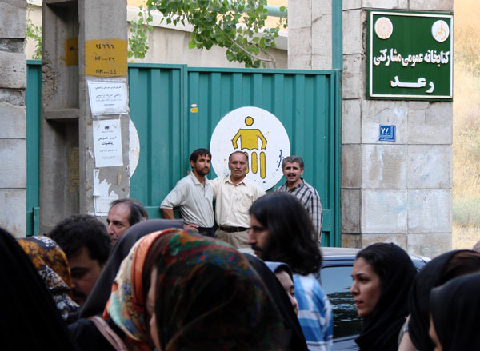
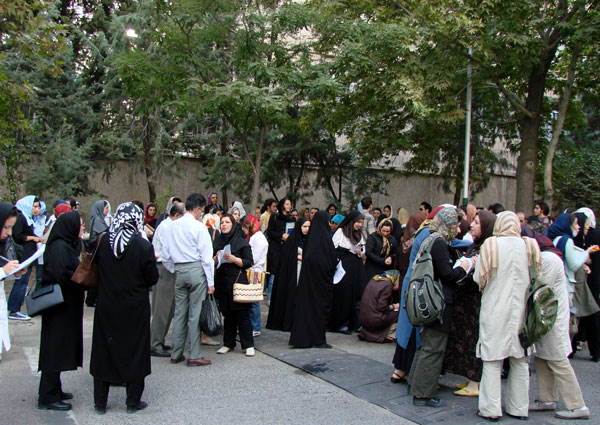
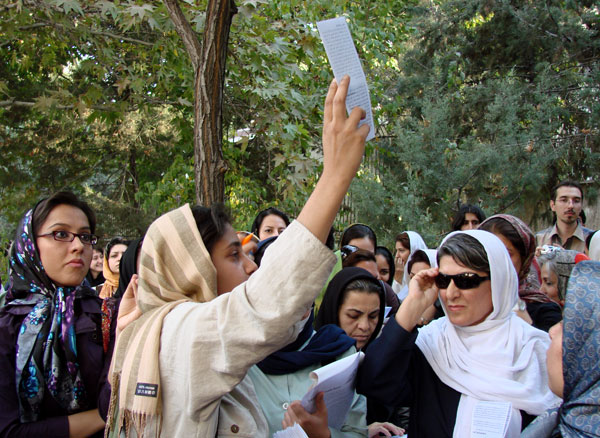
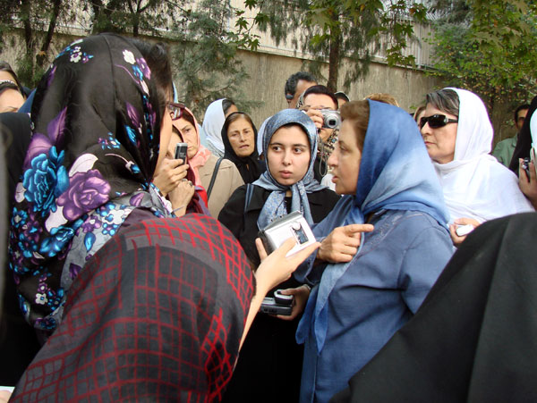
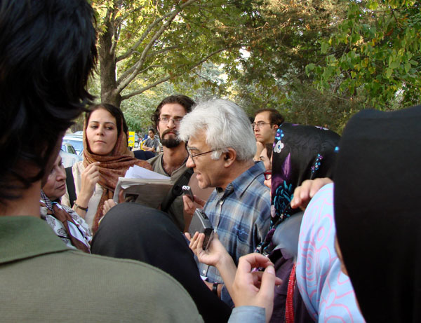
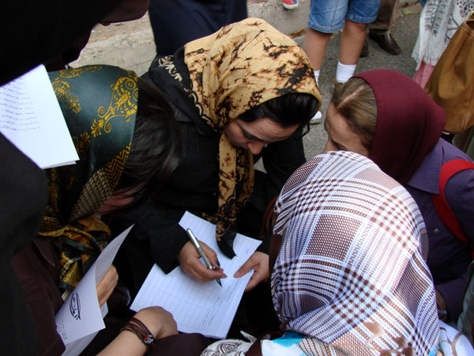

|
|

كمپين يك ميليون امضا براي تغيير قوانين تبعيض آميز آغاز به كار كرد
محبوبه حسين زاده
يكشنبه5 شهریور 1385
كمپين «يك ميليون امضاء براي تغيير قوانين تبعيضآميز» كه قرار بود روز یکشنبه با برگزاری نشست «تاثير قوانين بر زندگي زنان» آغاز به كار كند ، با مخالفت وزارت كشور و نيروي انتظامي پشت درهاي بسته موسسه آموزشي رعد آغاز به كار كرد.

قراربود نشست در سالن موسسه آموزشي رعد برگزار شود اما صبح يكشنبه روز برگزاري نشست، از طرف نيروهاي اطلاعات و حفاظت شهرك غرب با مدير داخلي اين موسسه صحبت شده بود كه چون اين برنامه مجوز ندارد ،بايد برگزاري آن را كنسل كنيد.البته قبل از اين هم چند تلفن مشكوك به اين موسسه شده بود و از برهم زدن اين مراسم خبر داده بودند .روز جمعه نيز دو نفر با عنوان اداره اماكن به سرايدار اين موسسه آموزش مراجعه كرده و گفته بودند نبايد اين برنامه در اينجا برگزار شود .
ساعت سه بعدازظهر كه گروهي از اعضاي اين كمپين براي آماده سازي سالن برگزاري نشست مراجعه كردند ،متوجه شدند كه نمي توانند اين نشست را در اين سالن برگزار كنند.به همين دليل پنج نفر از اعضاي اين كمپين به كلانتري منطقه شهرك غرب رفتند تا خود با مسئولان انتظامي صحبت كنند. شهلا انتصاري كه يكي از اين افراد مراجعه كننده به كلانتري است، مي گويد: «در كلانتري با رئيس نيروي انتظامي منطقه شهرك غرب و افسر اطلاعات صحبت هايي شد .آنها هم گفتند كه امروز صبح از معاونت سياسي- نظامي وزارت كشور به اين كلانتري فاكس زده شده تا ما حفاظت برگزاري اين مراسم را برعهده بگيريم ولي به فاصله نيم ساعت فاكس ديگري زده شده مبني بر اين كه اين نشست مجوز ندارد و بايد اين برنامه را كنسل كنند و شما هم نبايد اجازه برگزاري اين نشست را بدهيد. »
انتصاري مي افزايد:« به رغم اين كه براي برگزاري نشست احتياج به گرفتن مجوز نيست، از رئيس كلانتري خواستيم پشت درهاي موسسه رعد كه محل برگزاري اين نشست بود بايستيم تا به مهمانها و مدعوين خبر عدم برگزاري اين مراسم را بدهيم كه بعد از هماهنگي با افسر اطلاعات اين اجازه داده شد.»

اما اين نشست در جمع افرادي كه پشت درهاي بسته ايستاده بودند، آغاز شد. نوشين احمدي خراساني، شروع اين كمپين را اعلام كرد و از اهداف اين كمپين گفت .احمدي خراساني گفت :«در مرحله اول ،قصد داريم يك ميليون امضا براي تغيير قوانين تبعيض آميز عليه زنان جمع آوري كنيم ولي اين تنها هدف اين كمپين نيست بلكه قصد داريم با آگاهي دادن و آموزش چهره به چهره به زنان و مردان بياموزيم و مردم را در تغيير سرنوشت شان سهيم كنيم .»

شيرين عبادي هم گفت: «طبق قانون اساسي برگزاري تجمع مسالمت آميز كه مغاير مباني اسلام نباشد، آزاد است اما متاسفانه نيروي انتظامي و وزارت كشور،دستور داده اند كه درهاي سالن برگزاري نشست را ببندند در حالي كه اين نشست مغايرتي هم با اسلام نداشت و اين خلاف حقوق بشر است . »شيرين عبادي سپس اين كمپين را در بيرون درهاي بسته امضا كرد .

زرافشان نيز پس از امضاي اين كمپين گفت: «بايد اين حركت را به توده هاي مردم كه بيشتر از ما در معرض تضييح حقوق شان قرار دارند، منتقل كنيم . بايد اعضاي اين كمپين تلاش كنند تا پستوي ذهن زناني را كه در طبقات پايين له شده اند، روشن كنند و اگر اين حركت ،شكل جمعي به خود بگيرد مهار كردنش خيلي سخت مي شود و انتقال و آگاهي توده مردم با اهداف اين كمپين ، باعث قدرتمند شدن شما براي ادامه اين حركت مي شود.»

در پانل اول نشست امروز قرار بود زهره ارزنی، خدیجه مقدم، رضوان مقدم،ژیلا بنی یعقوب، هما مداح، شهلا انتصاری، زارا امجدیان و فریبا داوودی مهاجر به نمایندگی از گروه کمپین طرح و اهداف کمپین را تشریح کنند، سيمين بهبهاني، شيرين عبادي، شهلا لاهيجي، بابك احمدي، شهلا اعزازي، ناصر زرافشان، نرگس محمدي، منيرو روانيپور، فريده غيرت،ـ شهلا شركت، اردشير رستمي، فرزانه طاهري، فريبرز رئيس دانا، معصومه حيات غيبي ، فرهاد آئيش، بنفشه حجازي، عمران صلاحي، مهوش شيخالاسلامي، مجيد تولايي، بهاره هدايت (نماينده دانشجويان تحكيم وحدت) و مازيار سميعي (نماينده گروهي از دانشجويان) نيز سخنرانان پانل دوم نشست بودند.قرار بود در پانل سوم اين نشست نيز نمايندگاني از شهرهاي گرگان، شيراز، تبريز و زنجان صحبت كنند.

با وجود لغو اين نشست از سوي نيروي انتظامي، كمپين يك ميليون امضا براي تغيير قوانين تبعيض آميز، امروز 5 شهريور ماه 1385 با جمع آوري بيش از 200 امضا آغاز به كار كرد.
آغاز جمع آوري يك ميليون امضاء براي تغيير قوانين تبعيض آميز/كانون زنان ايراني
جلوگيري از برگزاري همايش كمپين يك ميليون امضاء براي تغيير قوانين تبعيضآميز/گزارش ادوار نيوز
کمپين يک ميليون امضايی در حاشيه خيابان داغ کليد خورد، گويا نيوز
تغییر قوانین تبعیض آمیز به رغم دستور لغو برگزاری اولين سمینارش، آغاز شد/زنستان